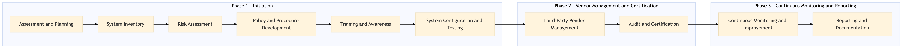

This process document outlines the steps for ensuring PCI DSS compliance across various OTA and TMC systems.
| Trigger | Initiation of a new payment platform or update to an existing one. |
| Outcome | All systems are compliant with PCI DSS standards, ensuring secure handling of cardholder data. |
| Systems | Expedia Open World Partner Central Amadeus NDC Sabre GDS Travelport EVC One Key TravelAds AWS SageMaker Snowflake Kafka Salesforce Tableau SAP Concur T2 SAP Concur Expense Amex GBT Neo/Complete SAP S/4HANA International SOS Cvent Amex Corporate Card VCN SAP Analytics Cloud Workday |

Click to enlarge
| Step | Name & Pain Point | Role | System | Input | Output | KPI | Flags |
|---|---|---|---|---|---|---|---|
| 1.1 | Assessment and Planning Resource allocation for the assessment team | IT Security Officer | N/A | PCI DSS compliance requirements | Compliance assessment plan | 100% completion of the assessment within 2 weeks | ◆ Decision |
| 1.2 | System Inventory Outdated or missing system information | IT System Administrator | All systems listed in OTA and TMC domains | List of all systems | Updated system inventory with PCI DSS compliance status | 100% accurate inventory within 1 week | ⚠ Exception |
| 1.3 | Risk Assessment Complexity in identifying all potential risks | IT Risk Manager | All systems listed in OTA and TMC domains | System inventory with PCI DSS compliance status | Risk assessment report | 100% completion of risk assessment within 3 weeks | ◆ Decision |
| 1.4 | Policy and Procedure Development Stakeholder buy-in for new policies | IT Compliance Officer | N/A | Risk assessment report | PCI DSS compliance policies and procedures | 100% approval of policies within 2 weeks | ◆ Decision |
| 1.5 | Training and Awareness Engaging all employees in the training program | IT Training Manager | All systems listed in OTA and TMC domains | PCI DSS compliance policies and procedures | Training materials and awareness program | 100% employee participation within 4 weeks | ⚠ Exception |
| 1.6 | System Configuration and Testing Technical challenges in configuring all systems | IT System Administrator | All systems listed in OTA and TMC domains | PCI DSS compliance policies and procedures | Configured and tested systems | 100% successful system configuration within 6 weeks | ◆ Decision |
| 1.7 | Third-Party Vendor Management Coordinating with multiple vendors for compliance | IT Vendor Manager | All third-party vendors used by OTA and TMC domains | PCI DSS compliance policies and procedures | Vendor agreements with PCI DSS compliance requirements | 100% vendor compliance within 8 weeks | ◆ Decision |
| 1.8 | Audit and Certification Passing the audit with no major findings | IT Compliance Officer | All systems listed in OTA and TMC domains | Configured and tested systems | PCI DSS compliance certification | 100% successful audit within 2 weeks | ◆ Decision |
| 1.9 | Continuous Monitoring and Improvement Maintaining consistent monitoring over time | IT Security Officer | All systems listed in OTA and TMC domains | PCI DSS compliance certification | Ongoing monitoring and improvement plan | 100% adherence to continuous monitoring within 4 weeks | ⚠ Exception |
| 1.10 | Reporting and Documentation Accurate and comprehensive documentation | IT Compliance Officer | N/A | Continuous monitoring and improvement plan | Compliance report and documentation | 100% complete documentation within 2 weeks | ◆ Decision |